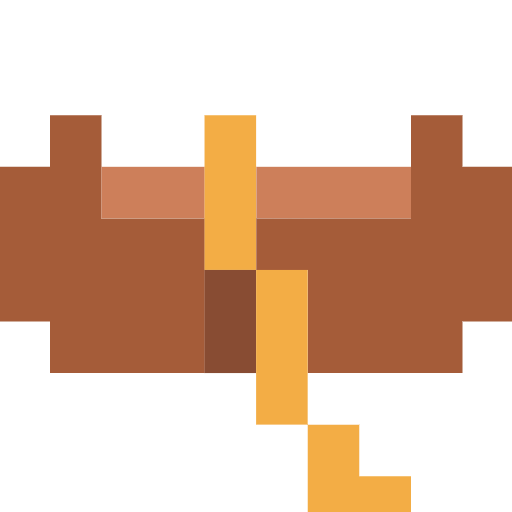

3D Gesture-Controlled Graphics Engine
Hybrid computer vision and 3D graphics application that allows a user to control real-time 3D rendering using color tracking.
More on Github
Hello! I’m Samet Bekiroğlu, a computer engineering student at Afyon Kocatepe University. When it comes to my studies, I am especially interested in learning about artificial intelligence and exploring different coding languages. I’ve also completed two Erasmus programs, living mainly in Hungary and Romania, which gave me the chance to travel across several other countries. I am a very extroverted person, so whether I am at university or traveling abroad, I love meeting new people and spending time with my friends.
These are some of the visual interests and creative references I keep returning to for inspiration.
Discover the locations and brand showcases I enjoy, displayed in a full-width experience.
Here are a few recent projects that reflect my work in graphics, embedded systems, data design, and web development.
Hybrid computer vision and 3D graphics application that allows a user to control real-time 3D rendering using color tracking.
More on GithubA model of a smart house using Arduino and many other sensors.
More on GithubClean and reliable relational database to manage an electricity distribution grid using Oracle standards.
More on GithubA simple personal website showcasing my work, interests, and contact links.
More on Github